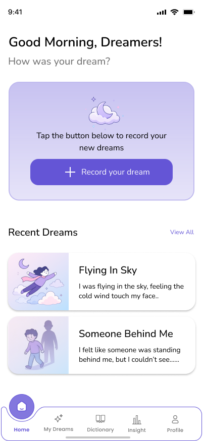
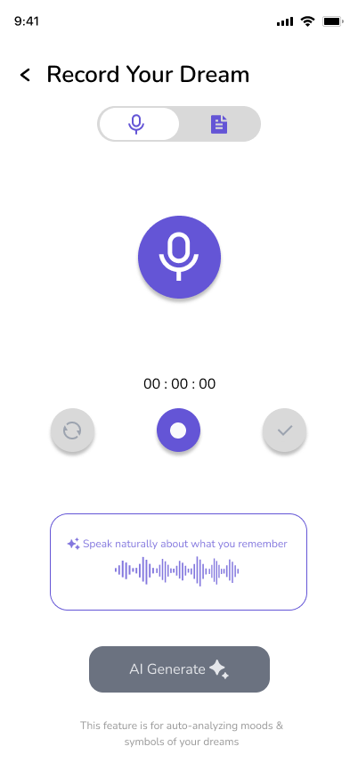
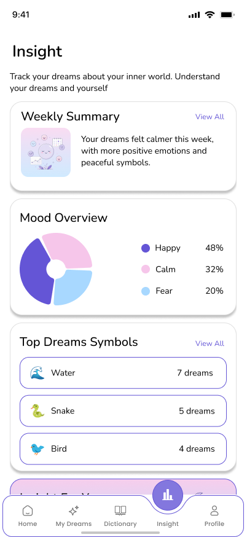

🏆 Joint 2nd place — 1-month hackathon
UI/UX Design · Team of 4
Memoora
FigmaDesign systemMobile UIAI product
A dream-journaling app that records dreams by text or voice, then uses AI to surface patterns, meanings, and weekly insights. I designed 50+ screens with a full design system — typography scale, color tokens, components, and icons — in a soft "dreamscape" visual language.